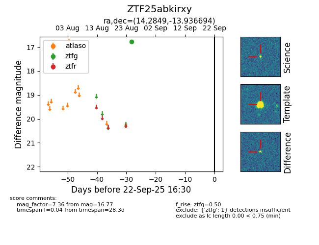

FINK: ZTF25abkirxy
Lasair: ZTF25abkirxy
ALeRCE: ZTF25abkirxy
ZTF25abkirxy (ztf,fink)
equatorial (ra, dec) = (14.2849,-13.93669)
galactic (l, b) = (128.9746,-76.74150)

last ztfg=16.77
1 ztfg detections